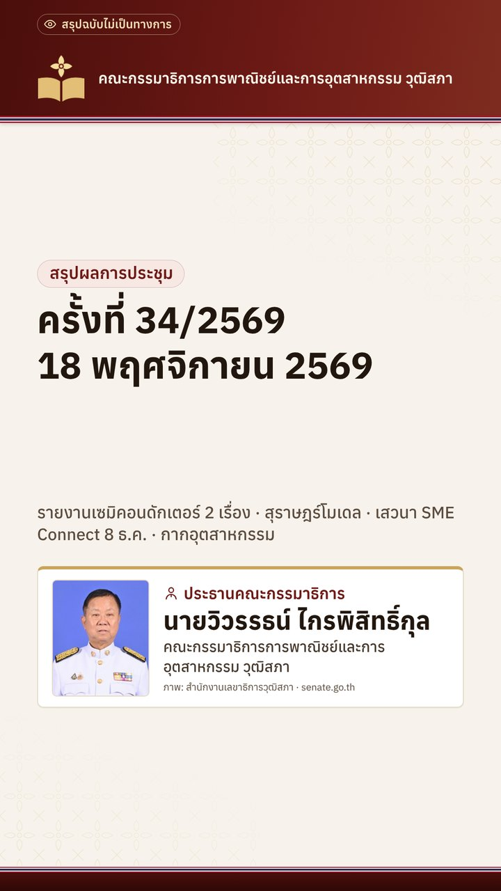
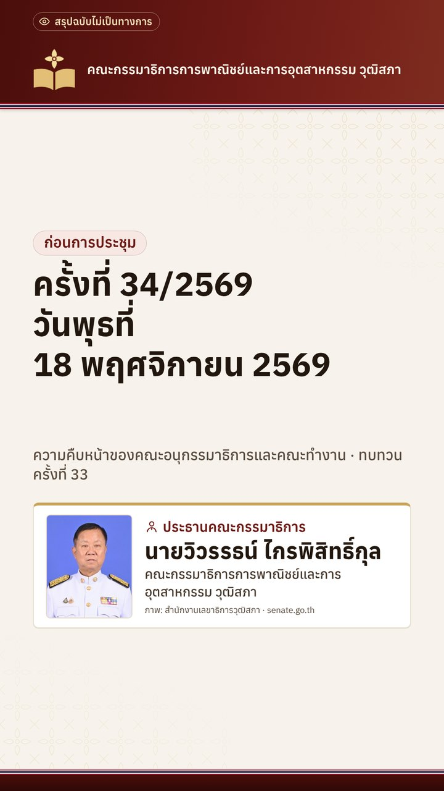

ร่างรายงานเซมิคอนดักเตอร์และกำลังคน ข้อเสนอช่วยเหลือ SMEs “สุราษฎร์โมเดล” ความโปร่งใสในการจัดซื้อภาครัฐ และปัญหาบุคคลอำพรางในภาคอุตสาหกรรม
สรุปโดยย่อ
ที่ประชุมพิจารณาความคืบหน้าของคณะอนุกรรมาธิการ 3 คณะและคณะทำงาน 1 คณะ คณะอนุกรรมาธิการอุตสาหกรรมปรับปรุงร่างรายงานการพิจารณาศึกษา 2 เรื่อง ได้แก่ การยกระดับอุตสาหกรรมเซมิคอนดักเตอร์ (เพิ่มบทวิเคราะห์ตำแหน่งของประเทศไทยในห่วงโซ่อุปทาน มาตรการส่งเสริมการลงทุนของประเทศคู่แข่ง และข้อเสนอการจัดตั้งกองทุนและกลไกขับเคลื่อนเชิงยุทธศาสตร์) และการพัฒนาสมรรถนะกำลังคนสู่อุตสาหกรรมเซมิคอนดักเตอร์ (เชื่อมการพัฒนาทักษะกับการทำงานจริง การใช้ห้องปฏิบัติการร่วมกัน การกระจายศูนย์ฝึกอบรม และการรักษาบุคลากรที่มีความเชี่ยวชาญ) คณะอนุกรรมาธิการช่วยเหลือ SMEs ระยะเร่งด่วนฯ เสนอร่างรายงานที่ใช้จังหวัดสุราษฎร์ธานีเป็นกรณีศึกษา พบปัญหาสำคัญ 4 ประการ คือ ภาระหนี้และสภาพคล่อง ความไม่พร้อมในการเข้าสู่ระบบและยกระดับธุรกิจ ความเสียเปรียบในการแข่งขัน และการขาดการบูรณาการมาตรการของภาครัฐ และเสนอแนวทาง 5 ด้าน รวมถึงการทดลองรูปแบบเชิงพื้นที่ “สุราษฎร์โมเดล” ที่ประชุมเสนอเพิ่มกลไก “พี่ช่วยน้อง” ให้ผู้ประกอบการที่เข้มแข็งร่วมสนับสนุน SMEs ในพื้นที่ โดยเริ่มทดลองที่จังหวัดสุราษฎร์ธานีก่อนขยายผล คณะอนุกรรมาธิการส่งเสริมเอสเอ็มอีฯ รายงานข้อมูลจากผู้แทนองค์กรภาคเอกชนด้านการต่อต้านคอร์รัปชันเกี่ยวกับความเสี่ยงในกระบวนการจัดซื้อจัดจ้างภาครัฐ พร้อมข้อเสนอ เช่น การเปิดเผยข้อมูลผู้รับประโยชน์ที่แท้จริง การจัดทำทะเบียนผู้รับจ้างช่วง และการส่งเสริมระบบ e-Shopping และจะจัดเสวนา “SME Connect : ปลดล็อก SME ไทย เชื่อมตลาดรัฐสู่โอกาสทางธุรกิจ” ในวันที่ 8 ธันวาคม 2569 ณ อาคารรัฐสภา ส่วนคณะทำงานศึกษาและติดตามการบริหารจัดการกากอุตสาหกรรมรายงานความคืบหน้าการผลักดันการแก้ไขปัญหาการใช้บุคคลอำพรางและทุนสีเทาในภาคอุตสาหกรรม ซึ่งหน่วยงานที่เกี่ยวข้องได้เพิ่มความเข้มข้นในการตรวจสอบและบังคับใช้กฎหมาย
เรื่องที่ที่ประชุมพิจารณา
- คณะอนุกรรมาธิการอุตสาหกรรม: ปรับปรุงร่างรายงานการพิจารณาศึกษา 2 เรื่อง (การยกระดับอุตสาหกรรมเซมิคอนดักเตอร์ และการพัฒนาสมรรถนะกำลังคนสู่อุตสาหกรรมเซมิคอนดักเตอร์)พิจารณา
- คณะอนุกรรมาธิการช่วยเหลือ SMEs ระยะเร่งด่วนฯ: ร่างรายงานกรณีศึกษาจังหวัดสุราษฎร์ธานี ข้อเสนอ 5 ด้าน “สุราษฎร์โมเดล” และกลไก “พี่ช่วยน้อง”พิจารณา
- คณะอนุกรรมาธิการส่งเสริมเอสเอ็มอีฯ: ความโปร่งใสในการจัดซื้อจัดจ้างภาครัฐ และเสวนา “SME Connect” (8 ธ.ค. 2569)พิจารณา
- คณะทำงานศึกษาและติดตามการบริหารจัดการกากอุตสาหกรรม: ความคืบหน้าการแก้ไขปัญหาบุคคลอำพรางและทุนสีเทาในภาคอุตสาหกรรมพิจารณา
วิดีโอ

วิดีโอสรุปผลการประชุมความยาว 4:24 นาที · กดเพื่อดู
วิดีโอก่อนการประชุมความยาว 1:57 นาที · กดเพื่อดู